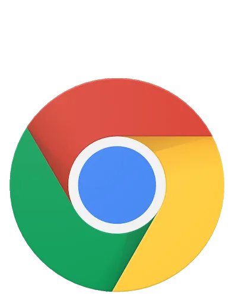

Las 5 Aplicaciones Web más famosas en la actualidad.
1. Google

Fecha de lanzamiento:
27 de septiembre de 1998.
Empresa encargada de su desarrollo:
Alphabet Inc.
Descripción de la característica más atractiva/novedosa de la app:
Es el motor de búsqueda más utilizado en la Web y recibe cientos de millones de consultas cada día a través de sus diferentes servicios.
El objetivo principal del buscador de Google es buscar texto en las páginas web, en lugar de otro tipo de datos.
Fue desarrollado originalmente por Larry Page y Sergey Brin en 1997.
Tecnologías/Herramientas implementadas en su desarrollo:
- Java
- C/C++
- C#
- JavaScript
- Python
Enlace a Google
2. YouTube
Fecha de lanzamiento:
14 de febrero de 2005.
Empresa encargada de su desarrollo:
Alphabet Inc.
Descripción de la característica más atractiva/novedosa de la app:
es un sitio web de origen estadounidense dedicado a compartir videos. Presenta una variedad de clips de películas,
programas de televisión y vídeos musicales, así como contenidos amateur como videoblogs y YouTube Gaming.
Tecnologías/Herramientas implementadas en su desarrollo:
- JavaScript
- Polymer
- Open Graph
Enlace a YouTube
3. Facebook
Fecha de lanzamiento:
4 de febrero de 2004.
Empresa encargada de su desarrollo:
Meta.
Descripción de la característica más atractiva/novedosa de la app:
Facebook es la red social que más usuarios tienen en el mundo. Son cerca de 2,2 millones de usuarios y en él puedes encontrar personas conocidas,
participar en grupos de interés, compartir contenido, enviar y recibir mensajes, hacer contactos, realizar búsquedas, anunciar, etc.
Tecnologías/Herramientas implementadas en su desarrollo:
- Java
- ReactJS
- Haskell
- JavaScript
- Python
Enlace a Facebook
4. Twitter
Fecha de lanzamiento:
15 de julio de 2006.
Empresa encargada de su desarrollo:
X Corp.
Descripción de la característica más atractiva/novedosa de la app:
Twitter es un servicio que permite que los grupos de amigos, familiares y compañeros de trabajo se comuniquen y estén en contacto
a través de mensajes rápidos y frecuentes. Las personas publican Tweets, que pueden contener fotos, videos, enlaces y texto.
Tecnologías/Herramientas implementadas en su desarrollo:
- Scala
- Bootstrap
- JAVA
- JavaScript
Enlace a Twitter
5. Instagram

Fecha de lanzamiento:
6 de octubre de 2010.
Empresa encargada de su desarrollo:
Meta.
Descripción de la característica más atractiva/novedosa de la app:
Instagram es una red social muy popularizada entre jóvenes que ofrece la posibilidad de compartir fotografías
con otros usuarios y poder recibir comentarios o “me gustas” (likes) de tus seguidores. Dentro de estas fotografías que podemos subir,
podemos añadir etiquetas o hashtags para etiquetar según el tipo de fotografía o que se puede ver en ella, así será más fácil su
clasificación a la hora de realizar búsquedas de una temática en concreto.
Tecnologías/Herramientas implementadas en su desarrollo:
- Java
- JavaScript
- Python
- C++
- Scala
- Ruby
Enlace a Instagram